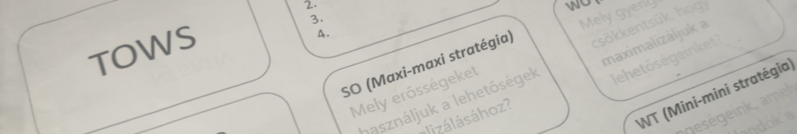

Ez az űrlap kiváló eszköz a problémák visszajelzésére, mert lehetőséget ad a felhasználóknak arra, hogy
strukturált és célzott módon osszák meg tapasztalataikat vagy nehézségeiket. Az egyszerűen használható mezők
biztosítják, hogy a válaszadás gyors és akadálymentes legyen, miközben az egyes inputtípusok (pl. szöveg,
dátum, szám) lehetővé teszik a pontos és releváns információk begyűjtését.
Miért kérjük hogy hozzájárulj a statisztikánkhoz?
A jó döntésel meghozatalához szükséges elemzéseket elvégezni. Ilyen elemzés például a TOWS elemzés. Reméljük
hozzájárulsz a statisztikánk minőségének javításához azzal, hogy engedélyt adsz az adataid felhasználására.

Köszönjük, hogy időt szánt a kérdőív kitöltésére! Nagyra értékeljük, hogy segít minket a véleményével,
hiszen minden visszajelzés kulcsfontosságú ahhoz, hogy szolgáltatásainkat folyamatosan fejleszthessük és a
felhasználói élményt még jobban a várakozásokhoz igazíthassuk. Az Ön válaszai segítenek nekünk abban, hogy
jobban megértsük a felhasználói igényeket és a problémákat, így hatékonyabban tudunk reagálni a jövőbeli
kihívásokra. Mivel a visszajelzés mindkét fél számára értékes, mindig arra törekszünk, hogy a lehető legjobb
megoldásokat kínáljuk.
Minden kitöltött kérdőív egy lépés afelé, hogy a szolgáltatásainkat még inkább az Önök igényeihez
igazíthassuk. Fontos számunkra, hogy minden egyes véleményt és javaslatot figyelembe vegyünk, és amennyiben
szükséges, azokat beépítsük a fejlesztési folyamatainkba. Ha bárminemű kérdése van, vagy szeretne további
részleteket megosztani velünk, ne habozzon kapcsolatba lépni! Az Ön véleménye valóban segít abban, hogy még
jobbá váljunk, és mi mindig szívesen fogadjuk a konstruktív visszajelzéseket.